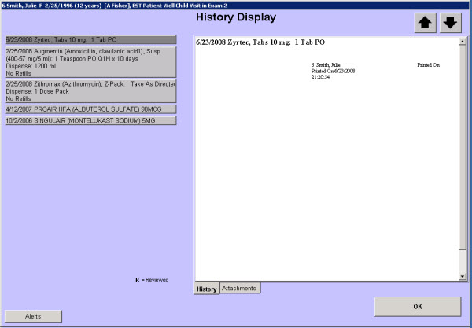

|
Description
This screen displays a bar on the left for each prescription previously ordered for the patient. This allows you to review medications that may be closed and no longer appear on the Current Medications screen.
Select the bar for the medication on the left and the details for that prescription appear in the gray box on the right. Select the gray box on the right and select the Reviewed button to note that you have reviewed the information.
How to Access This Screen
Access this screen by selecting the Review RX Drugs button on the Review History menu.
Screen Elements

Want to Learn More?
Related Solutions
Screen: Current Medications
Screen: History Display
How to: Document a Current Medication
|